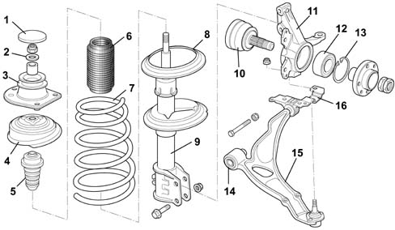

Introduction - FRONT SUSPENSION
- Path
- Descriptions > 44 SUSPENSION AND WHEELS > 4410 FRONT SUSPENSION > Introduction - FRONT SUSPENSION
- Kind
- system description
- Applies to
- all engines; all production periods
- Interactive page
- https://sloeber94.github.io/elrnDB-fDbl/en/#/2585412
Applies to: all engines; all production periods
The vehicle is equipped at the front with independent, McPherson type suspension with an anti-roll bar.
The front suspension crossmember is the type with box sections at the bodyshell attachments in order to strengthen the structure and improve the passenger compartment noise filtration.
The track control arms, made from forged steel, have horizontal axle bushes.
The ball joints at the end of the track control arms are rivetted and, if necessary, can be replaced by replacing the rivets with suitable fastening systems (Bolt-Nut-Washer) supplied together with the replacement part.
Side load type coil spring to reduce tangential forces on the shock absorber stem with a consequent improvement in the absorption of small irregularities in the road surface.
The shock absorbers are the double acting, telescopic hydraulic type with an axial bearing incorporated in the flexible mounting.
The front steering knuckle is made from steel and the wheel hub contains an oblique ball bearing.

1 Protective cover 2 Washer 3 Pad 4 Shock absorber mounting 5. Buffer 6. Bellows 7. Coil spring 8 Coil spring support plate 9 Shock absorber 10 Hub 11. Steering knuckle 12. Bearing 13. Circlip 14. Arm support 15. Track control arm 16. Bar/arm support